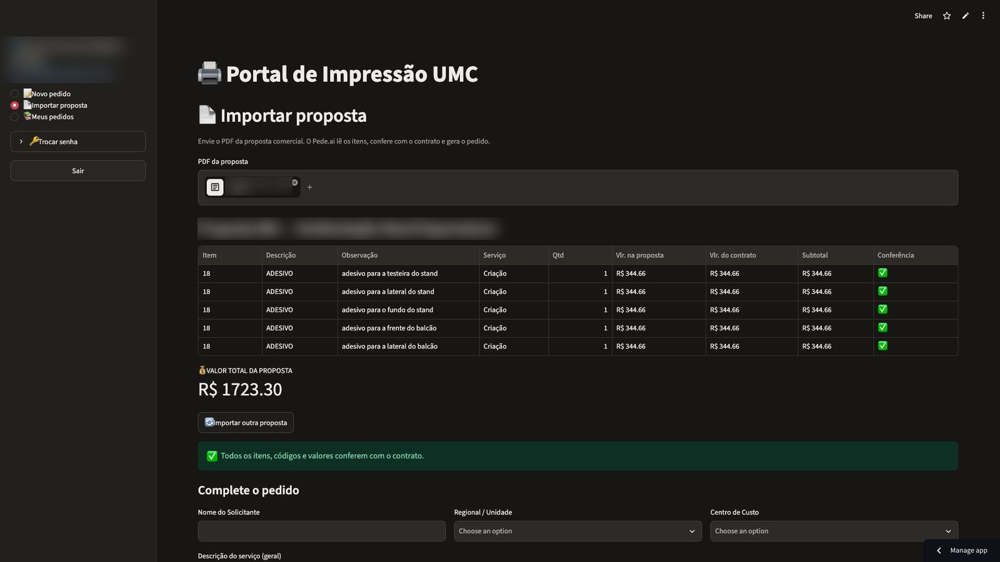

Sebrae/PR's creative team produces materials for events and regional offices across the state: vinyl prints, banners, displays, stickers and design services. The team doesn't produce them itself: vendors hired through public tender do. Each one has a contract with a table of items, a Protheus code and a fixed price, per m² or per unit. Every order comes from that contract spreadsheet and goes into the production pipeline in Ummense.
Pede.ai
From a manual process to a system in production
An internal Sebrae/PR platform for placing orders with vendors hired through public tender. You pick the item, enter the measurements and the order comes out ready, with the contract price calculated by the system and everything stored in a database.
work · sebrae/pr · 2026 · final version live
problem
Ordering from contracted vendors was manual: area and bleed calculated by hand, cost centers mixed up between regional offices, and no history.
my role
I designed and built the system, from the business rules in the API to the database, the tests and the interface.
result
Final React version live since Nov 23, after 19 releases. 378 automated tests, orders opening in 1.3 s (previously up to 8 s), and the services flow delivered 3 weeks ahead of schedule.
Context
How it was
To order a vinyl print, you had to:
- 1. open the contract spreadsheet and find the item;
- 2. do the math by hand: width and height, plus bleed on each side, times quantity, times the price per m²;
- 3. type up the order, the delivery label and the Ummense card;
- 4. check that the cost center really belonged to the regional office asking, in a map of more than 3,000 cost centers.
Design services were worse: the studio sent a quote as a PDF, and someone checked it line by line against the contract.
The pain
- Math errors: a per-m² item with bleed has five steps, and each one is a chance to get the invoiced amount wrong.
- Wrong cost center: one office's expense landed in another office's budget, and nobody noticed at the time.
- Rework: the same data was typed three times, in the order, the label and Ummense.
- No history: the order only existed as the file that was sent. Repeating an order meant starting from scratch.
How Pede.ai solves it
- math errorsthe server calculates from the contract; users only enter measurements and quantity
- wrong cost centeran immediate warning saying which regional office the cost center belongs to; you only continue by confirming, and that is recorded
- reworkone form produces the order and the label, and the card goes into the Ummense pipeline on its own
- no historyevery order is in the database: download again, duplicate, cancel
- PDF quotesthe system reads the PDF and checks every line against the contract; if anything differs, the entry is blocked
What it does today
Print: the order is built in a cart. For per-m² items, bleed is optional, with a single margin or one per side. Each item can ship to a different destination. If the cost center doesn't match the regional office, a warning appears, and you can only continue by confirming you've seen it. At the end you get a .zip with the order, the label and the entries for the management system.
Services: the studio sends its quote as a PDF, Pede.ai reads the file and checks every line against the contract: item, code, price, subtotal and total. If anything doesn't match, the entry is blocked. I tested it with 8 real quotes in two different layouts: all 22 lines and all 8 totals were read correctly.
Both flows have individual logins, history, re-downloading files, duplicating and cancelling.
Where it started: the MVP


The final version
The final interface, in React, went live on Nov 23 and replaced the MVP.


Decisions that guide the system
-
01
Validate before polishing
The React version already existed, with login and a dashboard, and I still put Streamlit into production first. The day the services flow went live, the support team asked for a description and notes per item. It shipped the same day.
-
02
Rules in the backend, simple screens
All business rules live in the API. Streamlit only displays and submits. When the React version comes back, it plugs into the same routes and nothing is lost.
-
03
Prices never come from the user
The screen sends the item and the measurements. The server recalculates from the contract table and saves a snapshot of each item. If the table changes tomorrow, today's receipt is still correct.
-
04
Nothing gets deleted
Orders, items and events are insert-only, enforced by the database itself with triggers. Cancelling records a new event.
-
05
Business data outside the code
Prices, vendors and the cost center map live in data files. The price table is generated from the contracts spreadsheet as all or nothing: if one tab is broken, nothing is saved.
-
06
Layered security
Validation at the API boundary and again in the database. The API connects with a user that can only read and insert. Passwords stored with scrypt and sessions with signed tokens.
The disappearing cent
I wrote a stress test that builds hundreds of random carts and checks every total against an exact calculation done another way. It found that about 0.1% of items came out 1 cent short: 540,251.415 became .41 instead of .42. The math used float, which can't represent decimals exactly. I moved everything to Decimal, with standard rounding only on each item's total.
The same test found a 1.2345 m measurement charged as such but saved as 1.235 m, and an invisible character that broke saving. The end-to-end tests, running the real Streamlit app against the real API, found two more: the cart using values from the previous screen, and duplication returning the old order number.
Measure before changing
Opening an order from the history took up to 8 seconds. I measured in production: routes without the database answered in 0.3 s, with the database in 2.7 s. The API is in the US and the database in São Paulo, and each new connection cost 1.2 s just for the security handshake. With a connection pool and session caching, it dropped to about 1.3 s. The test suite went from 274 s to 108 s.
Straight into the pipeline
Once a print order is saved, Pede.ai creates the card in Ummense's production pipeline on its own, with the title, the order in the description and the cost center tag. Ummense doesn't return an identifier and duplicates the card if the same request is sent twice, so the system records each send and never sends the same order twice. If Ummense is down, the order isn't affected.
Working with AI
A good part of the project was pair-programmed with Claude Code. What worked best was a CLAUDE.md file at the root of the repository, with the business rules, what must never be done, the deploy order and the backlog. AI sped up testing a lot. Business decisions stayed human: when the support team hadn't answered a question, the rule was to refuse with a warning, never to make up a value.
Release log
Each version is a deploy to the server: 19 in six months, from the MVP to the final version.
- v1.1.3 · Nov 25changecost center stored in full, with the suffix after the hyphenchangeprint order in the format the service team uses
- v1.1.2 · Nov 25fixchange-password window cut off at the top
- v1.1.1 · Nov 24changeshorter service quote
- v1.1 · Nov 23newusers tab for the administratorsecurityadmin rights only from the server
- v1.0.1 · Nov 23changecost center's regional office in the warning, bleed in centimetersnewreal Ummense pipeline connected
- v1.0 · Nov 23newfinal React version replaces the MVPsecuritysession in a protected cookie, no public data routes and login lockout
- v0.12 · Nov 19neworder becomes an Ummense cardnewfinal-version prototype approved
- v0.11 · Oct 13newper-item description and notes, the same day the service team asked
- v0.10 · Oct 13newPDF quote reading; services flow live 3 weeks ahead of schedule
- v0.9 · Oct 13performanceorders opening in ~1.3 s, previously ~8 s
- v0.8 · Oct 8dataeach vendor configured separately; all-or-nothing price table
- v0.7 · Oct 6newindividual logins and my ordersfixone cent short on 0.1% of items, plus 4 bugs
- v0.6 · Oct 2securityAPI key and a database user that can only read and insert
- v0.5 · Oct 2dataSQLite → PostgreSQL, with insert-only tables
- v0.4 · Oct 2newlabel with one block per destinationsecuritypassword out of the code
- v0.3 · Aug 25newbleed, per-item destination and Ummense titlefix10 calculation and interface bugs
- v0.2 · May 29newcontract number on the order
- v0.1 · May 28newMVP live, after 3 failed deploys
What I learned
code
Decimalmoney without rounding errors- FastAPI routesbusiness rules in one place
- PostgreSQL triggersinsert-only tables
- Connection poolingless time handshaking with the database
- Stress and end-to-end tests378 tests in 13 files, with random data
- scrypt and signed tokenspasswords and sessions
tools
- Python and FastAPIAPI, on Render
- StreamlitMVP, the first version
- PostgreSQL on Supabasedatabase
- pytesttests
- React and Vitefinal version, live
- Claude Codepair programmer, guided by CLAUDE.md